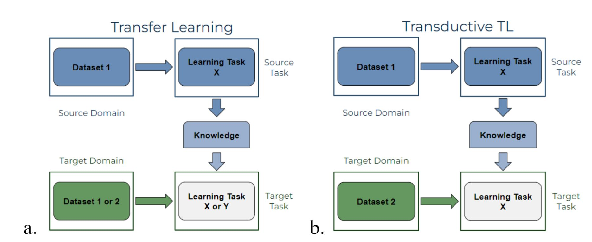
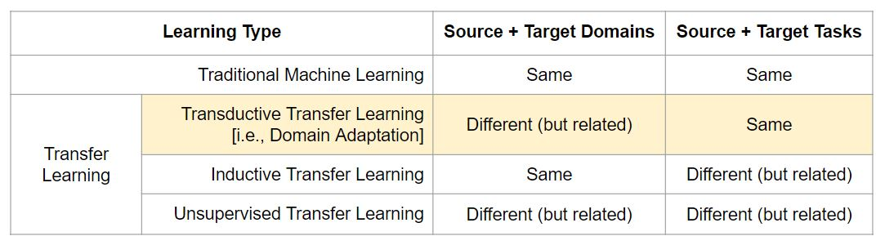

Transfer Learning and Domain Adaptation
Contents
Transfer Learning and Domain Adaptation#
TL addresses the limitation of knowledge generalization and sharing in traditional ML models. Rather than allowing only identical data (i.e., one study) to contribute to a model, TL can leverage information gained from related datasets, allowing a larger and more diverse set of data to influence the model. This allows TL to more similarly represent humans than traditional ML, as humans generalize knowledge learned to new situations both intentionally (Pfordresher et al. 2021) and unintentionally (Greening et al. 2021).
Source and Target Domains#
Data input into TL is either part of the source domain (i.e., the data to be leveraged; blue dataset box in Fig. 3a) or target domain (i.e., the data to be classified; green ‘Dataset’ box in Fig. 3a). The task to be learned, which uses the source domain data, is the source task (blue ‘Learning Task’ box in Fig. 3a). Using the source domain data to train the source task results in the model gaining the knowledge of this learned source task. This knowledge-improved model then influences the target task (white ‘Learning Task’ box in Fig. 3a) which the target domain data is used for. When the same source and target domains are used (i.e., identical data from one study), and the same source and target tasks are used (i.e., one learning task), the analysis is equivalent to a traditional ML model.

Fig. 2 - Learning processes between (a) transfer learning in general and (b) domain adaptation, a type of transductive transfer learning model.
Types of Transfer Learning#
There are three subtypes of TL based on the relationship between the two domains and between the two tasks (see Table 1):
Inductive TL uses the same domains and different but related tasks
Unsupervised TL uses different but related domains and different but related tasks
Transductive TL uses different but related domains and the same tasks
A domain has two components: a feature space (i.e., the space of all term vectors) and a marginal probability distribution of the learning sample, both of which are derived from the same dataset. When the source and target domain are different, it implies that either the source and target feature spaces, or the source and target probability distributions are not the same.
Domain adaptation (DA), the focus of this guide, specifies that the difference in domains occurs in the marginal probability distributions. Transductive TL, and therefore domain adaptation, specifies that the learning tasks are the same, implying that a predictive function learned in the source domain can be adapted to use in the target domain if some unlabeled target-domain data is provided.

Table 1 - The relationship between traditional ML and the three TL subtypes from (Pan and Yang 2010).